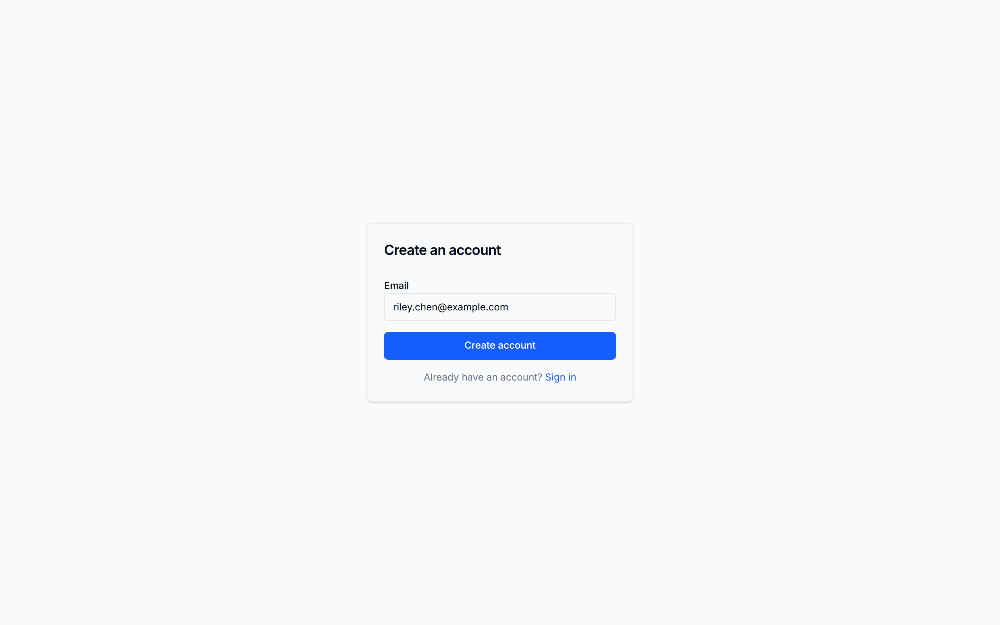
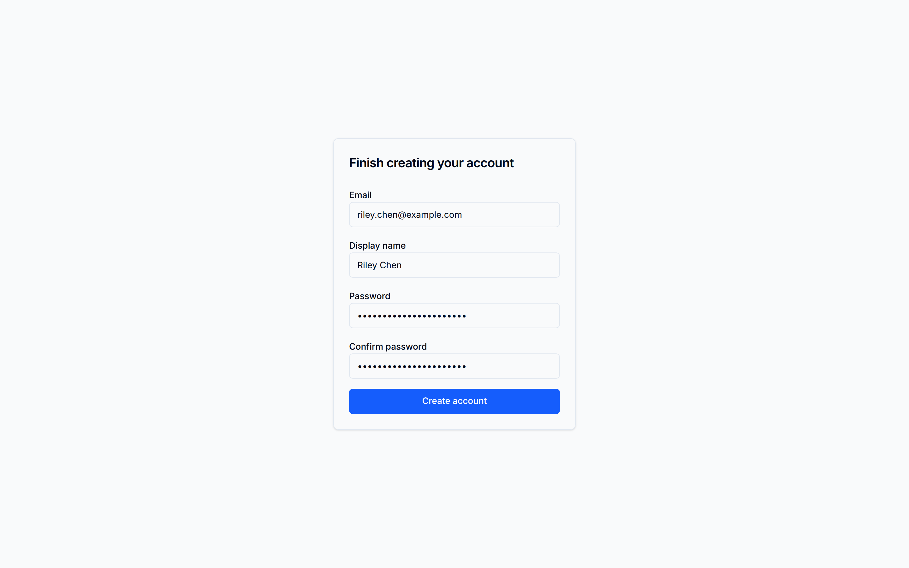

Authentication
Local accounts, a second factor by authenticator app or passkey, SAML 2.0 and OIDC sign-in, guest links, and API credentials.
Go Help Desk signs people in with a local password, or through an identity provider over SAML 2.0 or OpenID Connect. A password sign-in can require a second factor: an authenticator app (TOTP) or a passkey. Scripts and integrations use API keys or OAuth2 client credentials, and a guest reaches their one ticket through a private link.
Every switch in the table below is an administrator setting under Admin → Settings → Authentication (or General, for guest submission), stored in the database and applied without a restart. None of them is an environment variable, and none can be changed by an API key or OAuth client: they need a signed-in administrator.
| Method | Who it's for | Default |
|---|---|---|
| Local accounts | All roles | On |
| Second factor (TOTP or passkey) | Password sign-ins, all roles | Off: Multi-factor authentication → Enable MFA |
| SAML 2.0 | All roles | Off: SAML → Enable SAML login |
| OIDC | All roles | Off: OIDC / OpenID Connect → Enable OIDC login |
| Self-service signup | New reporting users | Off: Registration → Allow self-service signup |
| Guest links | People without an account | Off: General → Submissions → Guest submission |
| API keys and OAuth clients | Scripts and integrations | Created by an administrator |
Local accounts
Users sign in with their email address and password. Passwords are hashed with bcrypt at its default cost.
Account creation
Accounts are created in one of four ways:
- Admin-created: an administrator clicks Add User under Admin → Users and assigns any role.
- Self-service signup: only when Allow self-service signup is on, which it is not by default. Signup is limited to the Allowed email domains unless Allow open registration is on. A signup page at
/signupasks only for an email address and sends a verification link, valid for 24 hours. The display name and password are chosen when the link is opened. A self-registered account gets the User role. Email must be configured, or no link is sent. - SAML or OIDC: an account is created at the first sign-in through the identity provider. See SAML 2.0 and OIDC.
- First-run setup: the first administrator, created at
/setupon an empty database.


Password requirements
A password must be at least 8 characters and at most 72 bytes. There is no other complexity rule. Users change their own password on the Your account page. An administrator can set a new password for a user under Admin → Users → [user] → Reset password, which is shown only for accounts that have a password.
Repeated wrong passwords for one address are throttled: after AUTH_RATE_LIMIT_PER_MINUTE failures in a minute (10 by default), further attempts get 429.
When SAML login is enabled
Turning on Enable SAML login removes password sign-in for Staff and User accounts. Administrators keep it as a failsafe: if the identity provider is unavailable, an administrator can still sign in with their password on the normal login page. Enabling OIDC does not remove password sign-in for anyone.
Second factor: authenticator app and passkeys
A password sign-in can be followed by a second factor: a six-digit code from an authenticator app (TOTP, RFC 6238: Google Authenticator, Authy, 1Password, Bitwarden and others), or a passkey or hardware security key. A passkey is used after the password, not instead of it.
Second factors are checked only while Admin → Settings → Authentication → Multi-factor authentication → Enable MFA is on. It is off by default. A sign-in through SAML or OIDC is not asked for a local second factor; that is the identity provider's job.

Enrolling
Each user enrols on their own Your account page:
- Authenticator app: Set up an authenticator app shows a QR code and a text secret. Scan it, then enter the current six-digit code to confirm.
- Passkey: name the key and click Add a passkey. The browser or the security key does the rest. A user can hold several passkeys and remove any of them.
Requiring a second factor
Require MFA for roles, shown once MFA is enabled, makes a second factor mandatory for Admin, Staff or User accounts. A user in a required role with no factor is taken through authenticator setup at their next sign-in and cannot continue until it is done. With no role ticked, a second factor is optional.
Signing in
- The user enters their email and password.
- If they have an authenticator, they are asked for its code. If they have only passkeys, they are asked to confirm with one.
- Until the second step succeeds, the session can do nothing but finish signing in.
Five wrong codes in a row lock the account's code entry for 15 minutes.
Losing every factor
There are no recovery codes. A user who has lost their authenticator and every passkey is reset by an administrator: Admin → Users → [user] → Reset MFA clears the authenticator and every passkey and ends the user's sessions. They then sign in with their password and enrol again; if MFA is required for their role, they are asked to at that sign-in.
An administrator with no other administrator to reset them recovers on the server with go-help-desk reset-factors <email>. See Admin Guide: Users.
Second factors in the API
For a programmatic sign-in, submit the code to POST /api/v1/auth/local/mfa/verify after a successful password sign-in, or complete a passkey with POST /api/v1/auth/local/passkey/start and /finish. API keys and OAuth clients are refused on these routes. See the API Reference.
SAML 2.0 SSO
Go Help Desk acts as a SAML 2.0 Service Provider (SP) and works with any standards-compliant Identity Provider. It is configured entirely under Admin → Settings → Authentication → SAML. Saving the settings fetches the IdP metadata and applies the change at once, with no restart.
General setup
Generate an SP certificate and private key
The SP presents a certificate to the IdP for request signing and response verification.
openssl req -x509 -newkey rsa:4096 \
-keyout saml.key -out saml.crt \
-days 3650 -nodes \
-subj "/CN=Go Help Desk"Register the SP with your IdP
Your SP metadata, which is also the SP entity ID, is at:
<BASE_URL>/api/v1/auth/saml/metadataThe ACS (Assertion Consumer Service) URL is:
<BASE_URL>/api/v1/auth/saml/acsConfigure the IdP to send the user's email address, as an attribute named email (or mail), or as an email-format NameID. For the display name, Go Help Desk reads displayName, then cn, then name, then givenName and sn together, and falls back to the email address.
Enter the settings
Under Admin → Settings → Authentication → SAML, turn on Enable SAML login, then fill in IdP metadata URL, SP certificate (PEM) and SP private key (PEM), and save. A save that would leave no administrator able to sign in is refused.
Test with a non-admin account
Open a private browser window and click Sign in with SAML on the login page. Keep your administrator session open until it works; your administrator password still signs you in either way.
IdP-specific setup guides
Okta
- In Okta Admin: Applications → Create App Integration → SAML 2.0
- On the SAML Settings page:
- Single sign-on URL:
<BASE_URL>/api/v1/auth/saml/acs - Audience URI (SP Entity ID):
<BASE_URL>/api/v1/auth/saml/metadata - Name ID format: EmailAddress
- Single sign-on URL:
- Under Attribute Statements, add:
email→user.emailgivenName→user.firstNamesn→user.lastName
- Finish the app creation. Go to the Sign On tab and copy the Identity Provider metadata URL.
- Paste that URL into IdP metadata URL.
- Assign users or groups to the Okta application.
Microsoft Azure AD / Entra ID
- In the Azure portal: Microsoft Entra ID → Enterprise applications → New application → Create your own application. Choose Integrate any other application you don't find in the gallery.
- Go to Single sign-on → SAML.
- Under Basic SAML Configuration:
- Identifier (Entity ID):
<BASE_URL>/api/v1/auth/saml/metadata - Reply URL (ACS):
<BASE_URL>/api/v1/auth/saml/acs
- Identifier (Entity ID):
- Under Attributes & Claims, add claims named
email(the user's email address) anddisplayName(their display name), with no namespace. - Under SAML Certificates, copy the App Federation Metadata Url.
- Paste that URL into IdP metadata URL.
- Under Users and groups, assign the users or groups that should have access.
Google Workspace
- In Google Admin console: Apps → Web and mobile apps → Add app → Add custom SAML app.
- Give the app a name and click Continue.
- On the Google Identity Provider details page, click Download Metadata and host the XML at a stable URL.
- Under Service provider details:
- ACS URL:
<BASE_URL>/api/v1/auth/saml/acs - Entity ID:
<BASE_URL>/api/v1/auth/saml/metadata - Name ID format: EMAIL
- ACS URL:
- Under Attribute mapping:
- Primary Email →
email - First name →
givenName - Last name →
sn
- Primary Email →
- Paste the URL of your hosted metadata XML into IdP metadata URL.
- In the app settings, turn on access for the relevant organizational units.
Just-in-time user provisioning
When someone signs in through SAML for the first time, an account is created from the assertion with the User role, provided their email domain is on the Allowed email domains list (an empty list allows any domain). Promote accounts to Staff or Admin from Admin → Users.
Later sign-ins update the user's email address and name from the IdP, but never their role.
SP certificate rotation
Generate a new certificate and key, add the new certificate to your IdP's configuration (most IdPs accept a secondary certificate during a transition), then upload the new certificate and key under Admin → Settings → Authentication → SAML and save.
Administrator failsafe. Administrators can always sign in with their local password on the login page, even with SAML login enabled. Do not lose your administrator password.
OpenID Connect (OIDC)
OIDC is configured under Admin → Settings → Authentication → OIDC / OpenID Connect: Enable OIDC login, the provider's Issuer URL, a Client ID and a Client secret. The secret is write-only; leaving it blank on a later save keeps the stored one. Register this redirect URL with the provider, which the settings page shows with a copy button:
<BASE_URL>/api/v1/auth/oidc/callbackSaving applies the change without a restart. The login page then offers Sign in with OIDC.
- Go Help Desk asks for the
openid,profileandemailscopes, and uses the email address only when the provider marks it verified. - The first sign-in creates an account with the User role, subject to Allowed email domains. A sign-in can also attach to an existing account with the same verified address, unless that account is an administrator's or already uses SAML.
- A save that would leave no administrator able to sign in is refused, here as for SAML.
Guest access
Guest submission is off by default. Turn it on under Admin → Settings → General → Submissions → Guest submission. Up to and including 1.2.0 the pieces existed and did not connect: turning the toggle on produced no error and no guest tickets. It shipped as issue #154.
A guest is not an account. There is no guest password, no guest session and no guest role — possession of a private link is the whole credential, and possession of the mailbox it was sent to is what earns it.
How a guest gets in
- They submit a ticket at
/submit. The page shows a tracking number and the server emails the address a link to that one ticket. - The link is
/g#<token>. The token sits after the#deliberately: a fragment is never sent to the server, so it cannot land in a request log. The page reads it once and removes it from the address bar, so it survives neither browser history nor a screenshot of the URL. - From then on the browser sends it as an
Authorization: Guest <token>header to the guest API: read the ticket, reply to it, and open a follow-up once it is closed. The API also accepts an attachment upload, which the guest page does not offer.
What the token is, and how long it lives
| Property | Value |
|---|---|
| Length | 32 random bytes, hex encoded |
| Stored as | A SHA-256 hash. The raw value is never written down anywhere on the server. |
| Scope | Exactly one ticket. The token names the ticket; there is no ticket id in any guest URL. |
| Lifetime | 30 days from issue, as an outer bound. On an active ticket it is replaced sooner, every time the help desk writes to the guest (next row). |
| Rotated | On ticket creation, on a staff reply that notifies the customer, on a status change, on resolve, on a reopen by staff, and on a re-request. The old link stops working immediately: there is no grace period, so the newest email is always the one that works. |
| On close | Not revoked. Closing stops the rotation and sends no mail. The last link still opens the ticket, read-only, until it expires, and can open a follow-up. |
Every failure on a guest link, a wrong or expired token or a write to a closed ticket, answers an identical 404, so none of them can be told apart from outside.
Re-requesting a lost link
/track takes the tracking number and the email address and mails a fresh link. On an open ticket it replaces the previous one; on a closed ticket it is added beside it, read-only. It always answers the same way, whether or not those details matched a ticket, so it cannot be used to discover which tickets exist. It works for open and closed tickets. One request per ticket every five minutes.
Rate limiting
Guest submission and link re-requests share the sign-in rate limiter: AUTH_RATE_LIMIT_PER_MINUTE a minute (10 by default), keyed on the client address. The shipped docker-compose.yml does not pass that variable to the app, so under Compose it stays at 10 unless you add it to the app service's environment: block.
Behind a reverse proxy, that key is the proxy. The limiter reads the connection's remote address and deliberately does not trust a forwarded-for header, so every visitor arriving through one proxy shares one bucket. Rate-limit guest endpoints at your proxy if you need a per-visitor limit.
What a guest can and cannot do
- Can read the ticket's subject, description, status and public replies, and post a reply. Lifecycle rules still apply, including the reopen window.
- Can open one follow-up from their ticket once it is closed.
- Cannot see internal notes, staff names, the assignee, the reporter or resolution notes. The guest view is built from a deliberately narrow set of fields rather than by hiding parts of the normal one.
- Cannot attach a file from the guest page, or download an attachment. The guest view does not indicate whether a ticket has any.
- Cannot reach any other ticket. The token names one.
Guest notification email carries no ticket content, only the tracking number and the link. That has been true since v1.2.0.
Turning guest submission on needs a signed-in administrator. Like the MFA, SSO and registration settings, guest_submission_enabled cannot be changed by an API key or OAuth client: they get 403 session_required. A value that is not a boolean is refused.
API keys and OAuth clients
API keys are long-lived credentials for scripts, CI pipelines and tool integrations where a browser sign-in is impractical. OAuth clients do the same job with short-lived tokens. Both are created by an administrator.
Creating a key
- Go to Admin → API Keys and use Create new key.
- Give the key a descriptive name (e.g.
monitoring-script), and choose its scopes. A key must have at least one scope. An expiry date can be set only through the API, asexpires_at; the admin screen does not offer one. - The key is shown exactly once after creation. Copy it into a secret manager or CI secret store. It cannot be retrieved later.
Keys are stored as SHA-256 hashes, so a copy of the database does not reveal them.
Using a key
Send the key in the Authorization header with the ApiKey scheme:
curl https://helpdesk.example.com/api/v1/tickets \
-H "Authorization: ApiKey GHD_3f8a…"The REST API and the MCP server accept API keys, except on the routes that change how an account signs in (password, second factors, passkeys) and the settings that need a signed-in administrator. Those refuse every API key and OAuth client.
Permissions
A key acts as the administrator who created it, but only within the scopes it was given. There is no wildcard scope. GET /api/v1/admin/scopes lists them. See REST API: Scopes.
OAuth clients
Under Admin → OAuth Clients, an administrator creates a client with its scopes. The client exchanges its ID and secret for a short-lived bearer token at POST /api/v1/auth/oauth/token and sends it as Authorization: Bearer <token>. An OAuth client has no user identity of its own, so it cannot do anything that has to be recorded as a person's act, such as filing or replying to a ticket.
Revoking a key
On Admin → API Keys, click Revoke next to the key. Revocation is immediate: the next request with that key gets 401. Disabling the user who created a key also stops the key working.
Key naming conventions
Since the key value cannot be retrieved after creation, the name is your only way to identify a key later. Use names that describe the consumer: pagerduty-webhook, ci-pipeline-prod, alex-cli-dev. Include dates in names if you rotate keys on a schedule.